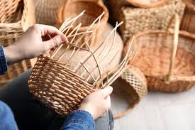
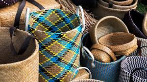
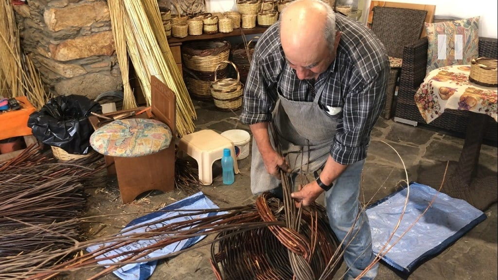

"Unleash Your Creative Side with Basket Weaving: The Ancient Art Reimagined!"

Are you tired of conventional hobbies? Do you crave something both practical and artistic? Look no further than basket weaving! This ancient craft has been revitalized in the modern age, offering a perfect blend of tradition and innovation. With just a few basic materials and techniques, you can create stunning baskets that showcase your unique style. Basket weaving isn't just about making containers; it's a form of self-expression that taps into your creativity and connects you with centuries of human history. So why wait? Grab some reeds or fibers and start weaving your way to artistic fulfillment today!
Lily Reed
"Basket Weaving: The Surprising Benefits for Mind and Soul!"

Did you know that basket weaving isn't just a craft—it's a form of therapy? Engaging in this meditative practice can have profound effects on your mental well-being. As you rhythmically weave each strand, your mind quiets, stress melts away, and a sense of calm envelops you. Studies have shown that activities like basket weaving can reduce anxiety, improve focus, and even alleviate symptoms of depression. So why not give your mind and soul the gift of relaxation? Start weaving your worries away today!
Sophie Weaver
"From Trash to Treasure: How Basket Weaving Transforms Everyday Materials into Works of Art!"

Think basket weaving is just for natural materials like reeds and fibers? Think again! This ancient craft has evolved to include a wide range of materials, including recycled items like newspaper, plastic bags, and even old T-shirts. By repurposing these everyday materials, you not only reduce waste but also unleash your creativity in unexpected ways. Basket weaving teaches us to see beauty in the ordinary and to transform the mundane into the extraordinary. So raid your recycling bin and start weaving your own eco-friendly masterpieces today!
Max Green